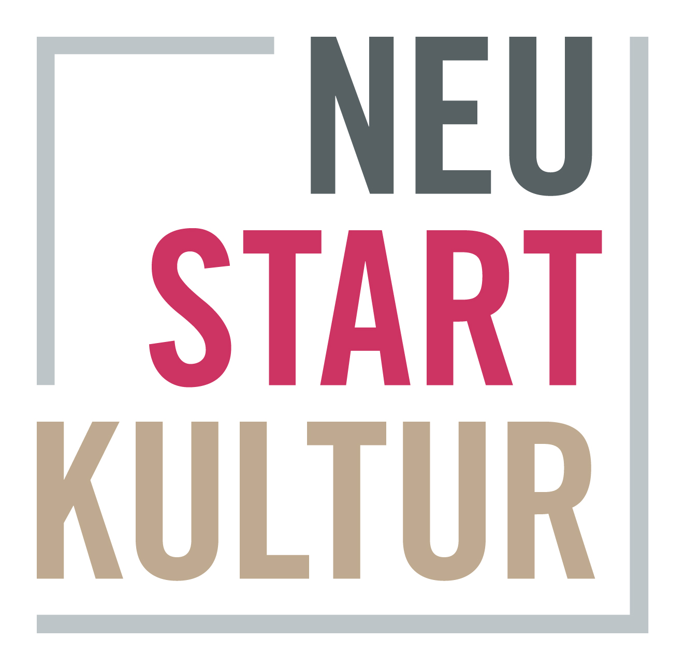
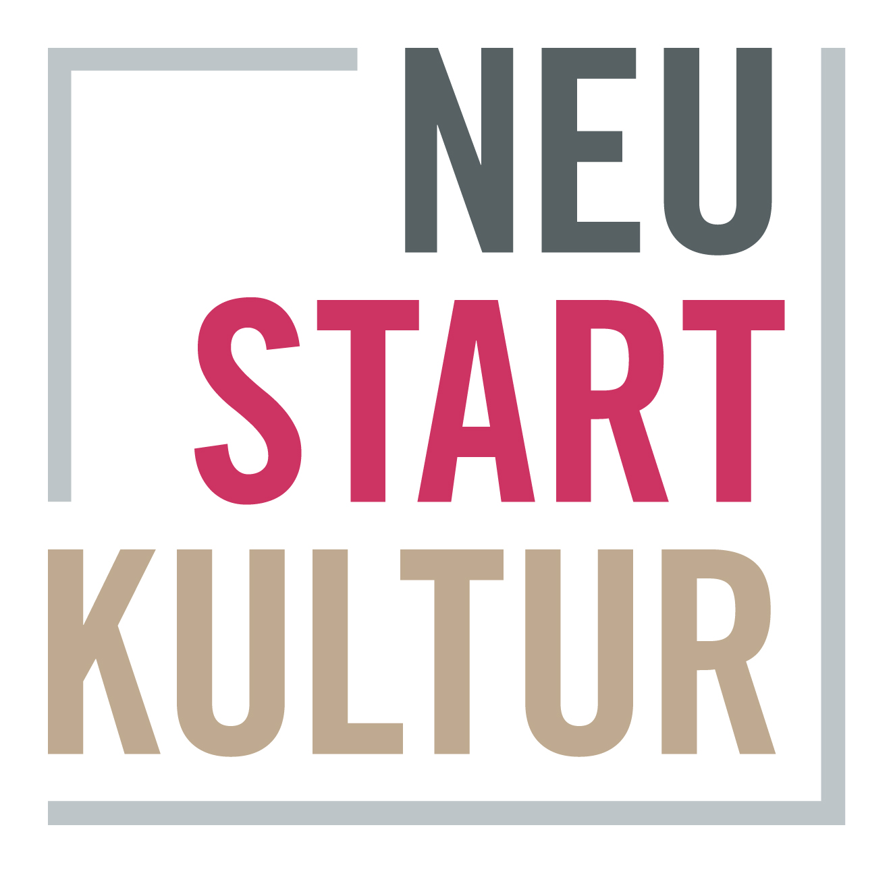

über diese app
Die Web-App “How to: Monika von Boch” bringt dir spielerisch die künstlerische Arbeit der Fotografin Monika von Boch näher. In vier Spielen kannst du mit der Smartphone-Kamera selbst Bilder aufnehmen und entdecken was passiert, wenn du sie mit einfachen Mitteln bearbeitest. Die digitalen Spiele ermöglichen dir, Techniken der analogen Fotografie kennenzulernen und besser zu verstehen. Es zeigt sich, dass in jedem Bild unzählige weitere Bilder verborgen sind, die man entdecken und weiterentwickeln kann. Beim Spielen kannst du deinen Blick schulen und nachvollziehen, welche Beobachtungen und Gedankenen Monika von Boch in ihrer Arbeit wichtig waren. Du erfährst etwas über Ihren Umgang mit Licht, ihr Verständnis von Natur, ihren Blick für Ordnung und Strukturen und ihre große Lust am Experiment.
impressum
BILDNACHWEIS
Monika von Boch — Artotheksbestand
Institut für aktuelle Kunst im Saarland an der Hochschule der Bildenden Künste Saar mit Forschungszentrum für Künstlernachlässe (http://institut-aktuelle-kunst.de)
Monika von Boch — Saarlandmuseum / Stiftung Saarländischer Kulturbesitz, Fotografische Sammlung, Saarbrücken (https://www.kulturbesitz.de/)
© Fotografien und Reprofotografien: Roland Augustin (Experiment 1), Tom Gundelwein (Monika von Boch, Selbstbildnis, Natur 1, 5, 6, Licht 5, Experiment 5, 6, 7), Sven Erik Klein (Natur 2, Licht 6, Ordnung 1, Experiment 2, 3, 4), Raphael Maaß (Ordnung 2, )
Monika Zorn (Portrait Monika von Boch, J. A. Schmoll gen. Eisenwerth)
VG Bild-Kunst Bonn 2021
HERAUSGEBER
Institut für aktuelle Kunst im Saarland an der Hochschule der Bildenden Künste Saar mit Forschungszentrum für Künstlernachlässe
GESTALTUNG UND PROGRAMMIERUNG
Catharina Grözinger (http://avantlesvacances.com)
Katja Rempel (http://katjarempel.de)
WISSENSCHAFTLICHE BEARBEITUNG UND REDAKTION
Nina Jäger, Sandra Kraemer (http://institut-aktuelle-kunst.de)
SPRECHER
Nicolas Bertholet
DANK AN
Andrea Lehr, Philippe Genêt (Geschäftsstelle Coding da Vinci)
Dr. Roland Augustin (Saarlandmuseum Saarbrücken)
Nicolas Bertholet, Mirka Borchert (Kinder- und Jugendtheater Überzwerg Saarbrücken)
Monika von Boch - Nachlass
Saarlandmuseum / Stiftung Saarländischer Kulturbesitz, Fotografische Sammlung, Saarbrücken
Julia Pierzina, Jan Tretschok (K8 Institut für strategische Ästhetik)
Saarländisches Filmbüro Saarbrücken
Saarländisches Landesarchiv Saarbrücken
FOTOGRAFEN
Dr. Roland Augustin, Tom Gundelwein, Sven Erik Klein, Raphael Maaß
VG Bild-Kunst Bonn 2021
© licensed under a creative commons attribution
4.0 International License (cc by-sa 4.0):
Catharina Grözinger, Nina Jäger, Sandra Kraemer, Katja Rempel
Halle, Saarbrücken, Saarlouis, Konstanz, Stuttgart 2021
Die Entwicklung von How To: Monika von Boch wurde ermöglicht durch das Stipendienprogramm von
Coding da Vinci im Programm Kultur Digital
der Kulturstiftung des Bundes.
Die Umsetzung wurde gefördert von der Beauftragten der Bundesregierung für Kultur und Medien
im Rahmen des Sonderprogramms Neustart Kultur
als Förderprojekt des Programms KULTUR.GEMEINSCHAFTEN der Kulturstiftung der Länder.
 
